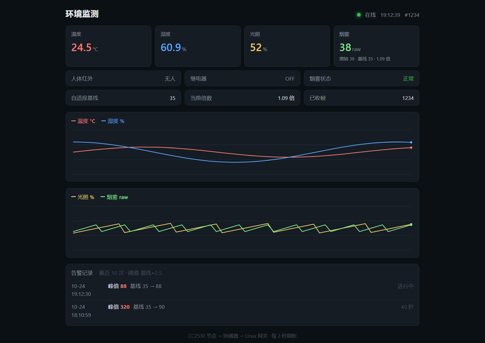
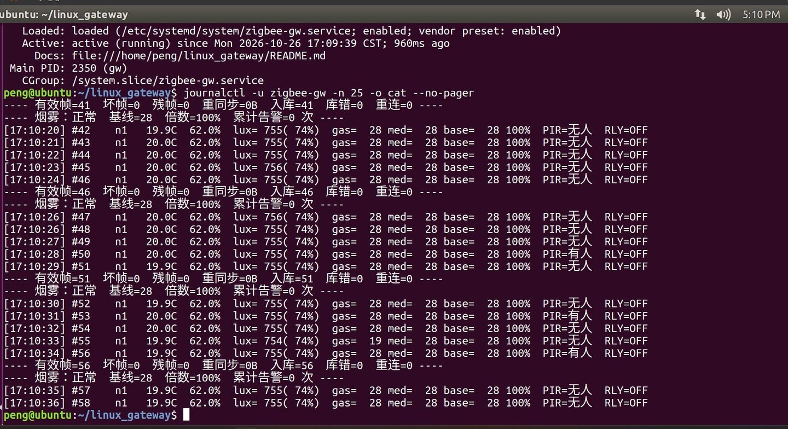
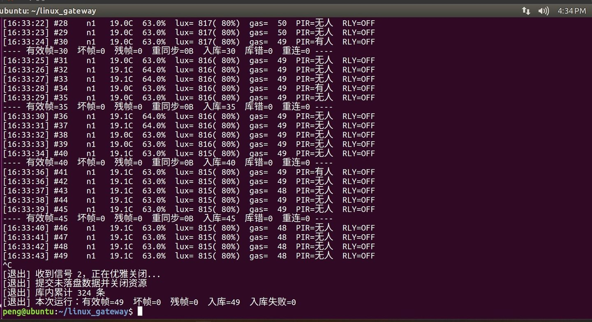

这一步是整个项目里代码量最大的部分，也是唯一完全跑在 Linux 上的部分： 串口收帧 → 解析 → 落库 → 起 HTTP 服务 → 浏览器看曲线。 全 C，只用 POSIX 和 SQLite，不引任何第三方 Web 框架。
功能本身不复杂。但有三个地方，我最初的做法「逻辑上完全正确」， 实测下来却是错的——而且错得非常隐蔽，不盯着数据看根本发现不了。 这篇主要讲这三个。
本文对应的全部源码在
code/linux_gateway/，
含 178 项离线断言和一把装服务用的 install_service.sh。
没有硬件也能跑通全链路——tools/sim_node.py
会用 socat 造一对虚拟串口，按真实帧格式往里灌数据。
一、整体结构
CC2530 终端 ──ZigBee──> 协调器 ──UART 115200──> Ubuntu 网关
gw_serial.c termios raw 模式 + O_NONBLOCK + 拔插重连
|
gw_frame.c st: 24 字节定长帧，滑动窗口重同步
|
+----+---------------------+
| |
gw_latest.c gw_db.c
进程内快照 SQLite WAL + 批量提交
（0 延迟） |
| |
/api/latest /api/history
+------------+-------------+
|
http_srv.c 手写 socket HTTP，跑在同一个 epoll 里
|
浏览器
全程序单进程单线程。串口 fd、信号 fd、HTTP 监听 fd、每条 HTTP 连接 fd，
全部注册进同一个 epoll。没有线程、没有锁、没有跨线程队列。
选择单线程的理由很实际：这个系统每秒只来一帧数据、同时最多几个浏览器， 并发压力几乎为零。而多线程带来的锁竞争、数据竞态、退出时序问题， 调试成本远高于它带来的收益。并发度用不上就先别上。
二、协议：定长帧为什么不需要 CRC
帧格式是从课程源码里逆出来的，24 字节定长，没有长度字段、没有序号、没有 CRC：
[0..3] 73 74 3A 65 帧头 "st:e"
[4..7] 温度 分/整、湿度 分/整
[8] 节点号
[9..11] 加速度 x/y/z
[12..13] 人体红外 [14..15] 光照
[16..17] 保留 [18..19] 烟雾
[20..21] 继电器 [22..23] ADC
全部小端
第一反应是「没有 CRC 怎么保证不出错」。但仔细想： 这是自己写两端的私有协议，不是标准协议，不需要防御恶意构造的帧。 无线链路的错误基本是位翻转或丢字节，而 24 字节定长 + 4 字节帧头的组合， 让「错误数据恰好构成一个合法帧」的概率极低。
于是校验改成字段范围检查，比 CRC 更聪明——因为它检查的是物理可能性：
| 字段 | 合法范围 | 依据 |
|---|---|---|
| 帧头 | 73 74 3A 65 | 精确匹配 |
| 节点号 | ≠ 0 | 0 号是协调器自己 |
| 人体红外 / 继电器 | ∈ {0, 1} | 数字量，2 就是错的 |
| 光照 / 烟雾 | ≤ 1023 | CC2530 是 10 位 ADC |
| 温度 / 湿度 | 上限过滤 | DHT11 量程 0~50℃ / 20~90%RH |
这比 CRC 强的地方在于：CRC 只能告诉你「这帧坏了」，范围检查能告诉你「哪个字段坏了」。 调试时前者只能整帧丢弃，后者能直接定位到是温度字段还是光照字段异常。
实测结果
[18:11:22] #1 n1 19.5C 57.0% lux= 584( 57%) gas= 40 PIR=无人 RLY=OFF [18:11:23] #2 n1 19.5C 57.0% lux= 584( 57%) gas= 40 PIR=无人 RLY=OFF ... [18:12:09] #48 n1 19.5C 57.0% lux= 584( 57%) gas= 35 PIR=无人 RLY=OFF ---- 有效帧=48 坏帧=0 残帧=0 重同步=0B 入库=48 库错=0 重连=0 ----
48 帧跨越 47 秒，帧间隔精确 1.000 秒；坏帧、残帧、重同步、库错、重连全部为 0。 这个干净程度说明固件侧的发送节奏和 Linux 侧的读取节奏是对齐的 ——节点 1 秒发一帧，网关的处理耗时远小于 1 秒，缓冲区从不积压。

三、陷阱一：批量提交让网页落后 19 秒
这是整篇最有价值的部分。
环境数据每秒一条，如果每条都单独提交事务，SQLite 每秒要做一次 fsync，
写入放大很明显。所以做了**批量提交**：攒够 20 条再 COMMIT 一次。
这是标准的优化手段，写入性能提升接近一个数量级。
然后问题来了。网页每 2 秒轮询一次最新数据，我最初的实现是
/api/latest 直接查库：
SELECT * FROM env_data ORDER BY id DESC LIMIT 1;
逻辑上没问题。但实测时发现：终端上已经打到 #48 了，网页上的「当前温度」还是 #29 那一帧。 差得不是一点，而且永远差着一截。
原因：未提交的行，别的连接看不见
gw_db_insert() 插完 20 条之后才 COMMIT。
在提交之前，这 20 条数据只存在于当前连接的事务里。
虽然物理上已经写进 WAL 文件了，但任何其他读者都看不见它们
——包括同一个进程里另开连接去查。
所以「库里最新的那条」永远是最多 19 秒之前的数据。 这不是 bug，这是事务隔离性的正确行为。 错的是我把它当成了实时数据源。
而且这个错误的可怕之处在于：它不报错、不告警，只是悄悄地慢。 如果这个页面是给别人演示的，你会以为「传感器反应慢」， 转头去查硬件——查一个星期也查不出来。
解法：实时走内存，历史走库
加了一个进程内快照模块 gw_latest.c，收到帧的第一时间就更新它：
typedef struct { int valid; /* 0 = 还没收到过任何一帧 */ int64_t ts; int temp_x10, hum_x10, lux, gas; uint8_t pir, relay; uint32_t frames; /* 累计有效帧数 */ ... } gw_latest_t;
数据流变成两条互不干扰的路径：
| 接口 | 数据源 | 延迟 | 用途 |
|---|---|---|---|
/api/latest | 内存快照 | 0 | 网页「当前值」、告警判定 |
/api/history | SQLite | ≤ 19 秒 | 曲线、历史回溯 |
曲线最多滞后 19 秒完全没关系——它画的是一分钟、一小时的趋势， 差 19 秒看不出来。但「当前温度」必须是真的当前。
gw_db_total_rows() 统计库内总行数，这个函数开头会先
COMMIT 再 COUNT，保证数字准确。
但 HTTP 的 /api/stats 每 2 秒调它一次
——等于每 2 秒强制提交一次事务，批量提交彻底失效。这个错更难查：功能全对、数字全对，只是性能悄悄退化成每条一提交。 后来单独写了个
gw_db_count_rows()，纯查不提交。
「查询函数有副作用」是持久层设计的红线。
四、陷阱二：Content-Length 和 body 不一致
HTTP 服务是自己用 socket() 写的，没引第三方库。路由只有五条：
/、/index.html、/api/latest、
/api/history、/api/stats，其余一律 404。
响应头是手拼的字符串：
HTTP/1.1 200 OK
Content-Type: application/json; charset=utf-8
Content-Length: 187 /* ← 这个数字必须等于 body 的实际字节数 */
Connection: close
手写 HTTP 最容易犯的、也最难查的错就是这个数。
如果 Content-Length 比实际 body 大，浏览器不会报错，它会一直转圈等剩下的字节，
直到超时。表现是「页面打不开，但服务器日志显示请求已经返回 200 了」。
我踩的变体更阴：400 和 405 两条错误响应的 Content-Length 是写死的常量
（20 和 21）。后来改了一个字的错误提示文案，长度变了，这个数没跟着改，
于是这两条错误响应全部挂掉。而正常路径一切正常——因为正常路径是 snprintf
算出长度再填的。
修法：所有响应统一走一个 build_plain() 辅助函数，用 strlen 算长度，
不再手写常量。
Content-Length 声明的值」和「实际 body 长度」是否相等。
这条断言成本几乎为零，却能一次性堵住手写 HTTP 最经典的坑。
五、陷阱三：网页放哪里
网页本来可以从文件系统读：/var/www/index.html 之类。
但这样部署就变成「拷贝二进制 + 拷贝网页 + 保证路径正确」三件事，
少一样就打不开，而且报错信息很难看懂。
改成把 HTML 编译进二进制：一个小 Python 脚本把
web/index.html 转成一个 C 字节数组 http_page.h，
直接编进程序。启动时不需要任何外部文件。
/* http_page.h（自动生成，不要手改） */ static const unsigned char g_index_html[] = { 0x3C, 0x21, 0x44, ... }; #define GW_INDEX_HTML_LEN 7466
好处很直接：整个网关就是一个可执行文件，
scp 过去就能跑，不存在「网页路径不对」。改网页的流程是
「改 web/index.html → 跑 make web → 重新编译」。
代价是二进制大了一点（约 7KB），以及改网页必须重编译。 对这个项目来说完全划算。
六、epoll 里同时管四类 fd
单线程要同时处理四件事：串口来数据、收到 Ctrl+C、有新浏览器连接、已有连接发来请求。
全部塞进一个 epoll 循环：
for (;;) { n = epoll_wait(ep, events, 8, timeout_ms); for (i = 0; i < n; i++) { fd = events[i].data.fd; if (fd == ser_fd) on_serial(); /* 串口有数据 */ else if (fd == sig_fd) goto done; /* signalfd：收到退出信号 */ else if (fd == http_fd) http_accept(); /* 新连接 */ else http_handle(fd); /* 已有连接 */ } }
signalfd：把信号变成文件描述符
传统做法是 signal() 注册回调，但回调在任意时刻打断主循环，
如果它正在写 SQLite，就会踩到不可重入问题。
signalfd 把信号变成一个可读的 fd，注册进 epoll。
信号来了 epoll 返回，主循环在安全的时刻处理退出，
该提交的提交、该关的关。Ctrl+C 从此不会丢数据。
串口拔插重连
USB 转串口被拔掉时，epoll 会返回 EPOLLHUP 或 EPOLLERR。
这时必须：关掉旧 fd → 从 epoll 移除 → 每秒重试打开设备 → 成功后重新注册。
不关旧 fd 就会 fd 泄漏，插拔几十次之后 open() 开始返回
EMFILE，而错误信息是「打开串口失败：Too many open files」，
和「串口坏了」完全不同——好在这个坑我在写完重连逻辑时就防住了。
七、怎么在没有板子的情况下测
这一步的代码全在 Ubuntu 上跑，但我写代码在 Windows。为了不每次都「传上去 → 发现编译错 → 改 → 再传」， 做了三件事：
- 纯逻辑模块单独编译测试。 解析层、落库层、滤波层都不依赖串口和 socket，可以在 Windows 上用 MinGW 直接编译运行， 连着 SQLite 的 DLL 一起跑。178 项断言，全在本机跑完，不需要任何硬件。
-
模拟节点。
一个 Python 脚本按真实协议生成 24 字节帧，配合
socat造一对虚拟串口， 网关以为自己在读真串口，实际读的是脚本。 它也能注入垃圾字节和截断帧，专门验重同步逻辑。 -
端到端串联测试。
把
main.c整个#include进测试文件（先#define main改名）， 这样static的帧回调函数就可见了，能喂假帧跑完整链路： 解析 → 快照更新 → 落库 → 告警判定。验的就是「接线」，这是最容易出 bug 的地方。
epoll／signalfd／sys/socket.h 的文件在 MinGW 上编不过，
但可以自己写桩头文件——把用到的结构体和函数声明抄一遍，
函数体全部空实现，然后 -I 指过去。
这样能骗过编译器做语法检查，甚至能链接起来跑逻辑测试。
桩文件用完就删，不进版本库。
八、上真机：从 Ctrl+C 到 systemd 服务
代码在虚拟机里能跑，和这套东西能长期跑着，是两件事。
手动 ./gw 有三个绕不过去的问题：
- SSH 一断、终端一关，进程跟着
SIGHUP一起走； - 程序自己崩了没人拉起来，网页就一直打不开，直到你想起来去看；
- 虚拟机重启之后什么都不剩，得凭记忆再敲一遍启动命令。
所以把它做成 systemd 服务。unit 文件不长，真正需要想清楚的是下面加粗的几行：
[Unit] Description=ZigBee Environment Gateway (serial -> SQLite -> HTTP) After=network.target [Service] Type=simple User=peng WorkingDirectory=/home/peng/linux_gateway ExecStart=/home/peng/linux_gateway/gw -d /dev/ttyUSB0 -p 8080 Restart=always RestartSec=3 TimeoutStopSec=10 StandardOutput=journal StandardError=journal [Install] WantedBy=multi-user.target
四个决定
-
WorkingDirectory决定gw.db落在哪。 数据库路径是相对当前目录的./gw.db， 一旦 working directory 变了，服务会另起一个新库从零开始记， 而网页上看起来一切正常——只是历史数据凭空消失。 设成和手动跑时同一个目录，之前的 324 条就无缝接上了。 -
Restart=always兜的是进程级故障： 段错误、OOM 被杀、kill -9。3 秒后自己起来，不需要人。 但注意它和程序内的串口重连是两层，不能互相替代： 串口松了应该由代码每秒重试打开，不能让整个进程去死一次再重启， 否则画面会闪、内存里的实时快照也会丢。 -
TimeoutStopSec=10。 systemd 停服务时先发SIGTERM，然后默认等 90 秒才SIGKILL。这边提交一个事务只要毫秒级，90 秒的默认值只会在卡住时让人干等。 -
不用 root 跑。
脚本里用
RUN_USER=${SUDO_USER}把服务降回普通用户—— 否则gw.db会变成 root 所有，之后想手动看一眼库都得sudo。
装完长这样

systemctl status zigbee-gw 的头部，加上 journalctl -u zigbee-gw 的日志。
enabled 是开机自启，running 是此刻活着，
日志里每 5 帧一行 有效帧 / 坏帧 / 残帧 / 重同步 / 入库 / 库错 / 重连，
再周期性打一行烟雾的自适应基线——这三个数字是判断链路有没有悄悄坏掉的唯一依据。
图里 库错=0 重连=0 那一列特别值得盯。
它们都是「本来不应该发生」的计数：只要有一个不是 0，说明有问题在发生，
但网页照样能打开、曲线照样在动——所以不会有人主动去看它，只能靠日志自己喊出来。
装完一分钟的实测：所有指标都是 0
Oct 26 20:14:57 zigbee-gw[3713]: [20:14:57] #68 n1 19.1C 64.0% lux= 577( 56%) gas= 24 med= 24 base= 25 96% PIR=无人 RLY=OFF Oct 26 20:14:55 zigbee-gw[3713]: ---- 有效帧=68 坏帧=0 残帧=0 重同步=0B 入库=68 库错=0 重连=0 ---- Oct 26 20:14:55 zigbee-gw[3713]: ---- 烟雾：正常 基线=25 倍数=96% 累计告警=0 次 ----
68 帧，坏帧 0，残帧 0，重同步 0 字节，入库 68，库错 0，重连 0。
这一行里最有说服力的是最后两个数：入库 和 有效帧 完全相等，
说明收到的每一帧都落了库，没有一帧在中间掉队。
入库 比 有效帧 少的时候，问题在 SQLite 那一侧
（批量事务没提交、磁盘满、表被锁）；入库 比 有效帧 多是不可能的，
真出现了说明计数本身有 bug。这个等式是整条链路最省事的一道体检。
把原始字节摊开：24 个字节到底装了什么
日志是解析完的结果，要证明解析层没错，得看串口上的原始字节。 停掉服务，直接抓 3 秒：
$ sudo timeout 3 od -An -tx1 /dev/ttyUSB0 | head -5 73 74 3a 65 01 13 00 40 01 00 00 00 00 00 41 02 00 00 18 00 00 00 00 00 73 74 3a 65 01 13 00 40 01 00 00 00 00 00 41 02 00 00 18 00 00 00 00 00
注意 od 是每行 16 字节输出的，而一帧是 24 字节——
24 不是 16 的整数倍，所以行边界会切在帧中间，光看这个排版根本看不出帧在哪。
按 24 字节重排一下，正好两帧、每帧六个四字节组：
帧1 73 74 3a 65 | 01 13 00 40 | 01 00 00 00 | 00 00 41 02 | 00 00 18 00 | 00 00 00 00 帧2 73 74 3a 65 | 01 13 00 40 | 01 00 00 00 | 00 00 41 02 | 00 00 18 00 | 00 00 00 00
两帧完全一样，说明这一秒里环境没有任何变化。要验证解析对不对，
必须按 24 对齐再看——直接照着 od 的 16 字节行去读，会一直错位。
按协议逐个字段对一遍：
| 偏移 | 字节 | 字段 | 解出来 |
|---|---|---|---|
| 0–3 | 73 74 3a 65 | 帧头 | ASCII "st:e" |
| 4 | 01 | 温度 小数位 | 1 |
| 5 | 13 | 温度 整数位 | 19 → 19.1 ℃ |
| 6 | 00 | 湿度 小数位 | 0 |
| 7 | 40 | 湿度 整数位 | 64 → 64.0 % |
| 8 | 01 | 节点号 | 节点 1 |
| 9–11 | 00 00 00 | xyz | 预留 |
| 12–13 | 00 00 | 人体红外 | 0 → 无人 |
| 14–15 | 41 02 | 光照（小端） | 0x0241 = 577 |
| 16–17 | 00 00 | 预留 | — |
| 18–19 | 18 00 | 烟雾（小端） | 0x0018 = 24 |
| 20–21 | 00 00 | 继电器 | 0 → OFF |
| 22–23 | 00 00 | ADC | 预留 |
对照上面那行日志 19.1C 64.0% lux=577 gas=24 PIR=无人 RLY=OFF——
七个字段，一个不差。
这才是「协议跑通了」的证据：不是日志看起来合理，而是日志里的每个数字都能在原始字节里指出来。
顺手还抓到几帧别的：05 13 00 4c → 19.5℃ / 76.0%，
04 13 00 48 → 19.4℃ / 72.0%。
温度和湿度一起往上走，跟前面稳定的 19.1℃ / 64.0% 明显不同——
那会儿正好有只手凑近了传感器。这反而是一份活体证明：
数据确实来自现场的物理量，不是某个固定值在循环播放。
od 的输出走管道时是全缓冲的，
3 秒才几十字节，够不到 4 KB 的缓冲上限；timeout 到点用 SIGTERM 结束进程，
缓冲区里那些还没落地的内容就一起蒸发了。偶尔能吐出东西，是因为那一轮恰好赶上了
od 自己刷出去。「没看到」和「没有」是两件事，而观测工具会让人把前者当成后者。 抓串口别用「直接打到管道」的方式，改成先落盘再看：
timeout 5 dd if=/dev/ttyUSB0 of=/tmp/cap.bin bs=24 count=5，
然后单独 od -An -tx1 /tmp/cap.bin。dd 是直接 write 系统调用，
就算进程被强杀，已经写下去的部分也在文件里。
踩到的坑：端口被占，但「我根本没开」
装的时候脚本报 8080 已被占用 并退出。我第一反应是「我刚重启过，怎么可能」。
一查：
sudo ss -ltnp | grep :8080
LISTEN 0 5 0.0.0.0:8080 0.0.0.0:* users:(("gw",pid=1325,fd=9))
确实有个 gw 在跑，是更早手动起的、终端关掉后没退干净的孤儿进程。
sudo pkill -x gw 之后安装就过了。
这里我改了一版脚本：它原先会武断地说「多半是你手动跑的 ./gw 还开着」。
猜对了省事，猜错了把人带偏。检查工具只负责给出事实，判断交给人——
现在它只打印占用者是谁，怎么处理由我看。顺带记一条：
ss -ltn 只给端口，ss -ltnp 才给进程名和 PID，排查时必须带 -p。
踩到的第二个坑：命令报错了，但什么都没做
验证 Restart=always 的办法很直接：把进程 kill -9 掉，看它几秒后会不会自己回来。
我给的命令是这么写的：
PID=$(systemctl show -p MainPID --value zigbee-gw) sudo kill -9 $PID
第一条报 systemctl: unrecognized option '--value'。
于是 $PID 是个空字符串，第二条等于在没给目标的情况下执行 kill——
报一个用法错误，然后什么也没杀。
原因：--value 是 systemd 230 才加的参数，这台机器是 229
（systemctl --version 一眼就能看到）。老版本只会输出 MainPID=2350 这种 Key=Value。
真正值得记下来的是怎么发现它没生效。因为 kill 报错之后，
systemctl status 依然会打印一段看起来非常健康的输出：
Active: active (running) since Mon 2026-10-26 17:09:39 CST; 2h 32min ago Main PID: 2350 (gw)
只看 active (running)，很容易得出「验证通过，进程活得好好的」这个结论。
决定性的是那个 2h 32min ago——
如果它真的被杀过又拉起来，这里应该是几秒。
同理 Main PID: 2350 也是反证：进程号没变，说明它从没死过。
status 上长得几乎一模一样。
区分它们只需要一个数字：uptime。
做这类故障恢复验证时，顺序必须是先确认「故障真的发生了」，再去看「有没有恢复」——
否则拿到手的是一份看起来通过、实际什么都没测的报告，而这比没测更危险。
修正后的做法是不去手动查 PID，直接让 systemd 自己动手：
sudo systemctl kill -s KILL zigbee-gw。
这样既绕开了 --value 的版本差异，也不会出现「杀了半天发现目标为空」这种事。
踩到的第三个坑：「找不到命令」，但它就在那儿
换新包、make、make test 全绿之后，最后一步安装：
peng@ubuntu:~/linux_gateway$ sudo ./install_service.sh /dev/ttyUSB0 8080 sudo: ./install_service.sh: command not found
第一反应是「包打漏了」。但紧接着 ls -l 一看，文件好端端躺在当前目录里，
内容也完整。文件不存在和文件存在，shell 说的却是同一句话。
-rw-rw-rw- 1 peng peng 3.9K Oct 26 20:05 install_service.sh
↑ 没有 x
权限位是 666——没有可执行位。
而 sudo 在 execve 拿到 EACCES 时，打印的文案就是
command not found。它没说「没有执行权限」，它说「找不到」。
command not found 至少有三种完全不同的成因：路径不在 PATH 里、
文件真的不存在、文件存在但没有执行位。三者的修法毫无交集。
看到这类提示，第一个动作不是找文件，是 ls -l 看权限位——
这一步能把三种可能一次砍掉两种。
为什么会丢？因为包是在 Windows 上打的。
Windows 文件系统没有 Unix 权限位，tar 只能填一个默认值，
解压出来就统一变成 666。而 make 编出来的 gw 是 Linux 自己产的，
权限正常，所以「编译能过、测试能过、只有脚本跑不了」这种组合特别容易误导。
改了三处，确保它不再复发：
-
打包时强制设位：
gettarinfo()拿到的ti.mode直接改写成.sh → 0o755、其余0o644，再addfile()。 不依赖源文件在宿主系统上的权限。 -
打包脚本自检：遍历所有
.sh，断言mode & 0o111必须非零， 不满足直接让打包失败。宁可打不出包，也不要打出一个装不上的包。 -
脚本自己补位：
install_service.sh开头加一句chmod +x "$0"。只要用bash install_service.sh跑过一次， 之后./直呼也能用。同时make install-service目标改成sudo bash ./install_service.sh，从一开始就不经过执行位。
顺带一句：make test 这次是 M5-2b 改动之后的全量回归——
test_parse 50 项、test_recent、test_filter 36 项、
test_http 13 组、test_chain 6 组，全部通过。
而且 test_http 的输出里已经能看到新加的
"serial_ok":0 字段——改动真的进了二进制，不是只改了源码。
为什么要优雅退出：kill 掉之后账要对得上

Ctrl+C 之后。注意最后两行——本次运行入库 49 条、库里累计 324 条、
入库失败 0。这三个数字能对上，才说明「一帧都没丢」这句话是有依据的，不是感觉。
库里是凑够 20 条提交一次的。如果退出时直接 exit()，
内存里还没提交的那一批就没了——最多丢 20 帧、20 秒的数据。
所以 main.c 用 signalfd 监听 SIGINT／SIGTERM，
收到之后走一条单独的收尾路径：提交未落盘事务 → 关串口 → 关库 → 打印本次累计。
手动 Ctrl+C 打的是「信号 2」，systemctl stop 打的是「信号 15」，
两者走同一条路，所以日常调试和线上运维不会出现两套行为。
journalctl 默认会进分页器，
卡在 (END) 不是死机，按 q 退出；
脚本或截图里一律加 --no-pager，一次输出完。
验证 Restart=always：真的杀掉了，也真的自己起来了
改用 systemctl kill -s KILL 之后，这一次能确认进程真的死了：
19:47:20 systemd[1]: zigbee-gw.service: Main process exited, code=killed, status=9/KILL 19:47:20 systemd[1]: zigbee-gw.service: Failed with result 'signal'. 19:47:24 systemd[1]: zigbee-gw.service: Service hold-off time over, scheduling restart. 19:47:24 systemd[1]: zigbee-gw.service: Stopped ZigBee Environment Gateway (serial -> SQLite -> HTTP). 19:47:24 systemd[1]: zigbee-gw.service: Started ZigBee Environment Gateway (serial -> SQLite -> HTTP).
19:47:20 被杀，19:47:24 自己回来，4 秒。
那 4 秒就是 RestartSec=3 加上调度开销。
更硬的证据是 PID：新的 Main PID 是 3059，
和之前的 2350 不是同一个号——
这才是「死过一次又活过来」，而不是「一直活着」。
但这次验证顺手炸出一个真问题
新起来的 3059 活了不到一秒就退了。原因是当时 USB 转串口被拔掉，
而 gw 在启动时打不开串口就直接 return 1：
19:47:24 zigbee-gw[3059]: 打开串口 /dev/ttyUSB0 失败: No such file or directory 19:47:24 systemd[1]: zigbee-gw.service: Main process exited, code=exited, status=1/FAILURE Active: activating (auto-restart) (Result: exit-code) ... 2s ago
Restart=always 忠实地执行了它的职责——每 4 秒拉一次，每次立刻死。
这叫重启风暴：问题没解决，只是把「一个错误」变成了「每 4 秒一个错误」。
更糟的是执行顺序：gw 先开串口、后建 HTTP 监听。
串口开不出来，网页也跟着一起挂了。
一根 USB 线松掉，整个系统连「看一眼当前数值」都做不到——
而这恰恰是最需要看数据的时候。
根子上是设计不一致：「运行中掉线」和「启动时就不在」走了两条完全不同的路。
前者有每秒重连（日志里 重连=1 就是它干的活），后者直接退出、把问题甩给 systemd。
同一个故障两种处理，说明这块逻辑还没收敛。
正确做法是让启动失败也进主循环，和掉线共用同一条重连路径——
「串口暂时不可用」是一个状态，不是一条死路。
第二次验证：线插回去，它自己就好了
把 USB 转串口插回去，中间没有重启过服务、没有人工介入，只等了几分钟再验一次：
19:53:34 zigbee-gw[3335]: 网页 : http://192.168.236.145:8080/ 19:53:39 zigbee-gw[3335]: ---- 有效帧=0 坏帧=0 残帧=0 重同步=0B 入库=0 库错=0 重连=0 ---- 19:53:40 systemd[1]: zigbee-gw.service: Main process exited, code=killed, status=9/KILL 19:53:43 systemd[1]: zigbee-gw.service: Started ZigBee Environment Gateway (...)
这一轮 Active: active (running) ... ; 2s ago、Main PID: 3343——
3 秒回来，直接进 running，不再反复失败。
更有意思的是 3335 那一行：它已经能打印出完整启动横幅了，
说明串口在两次验证之间的某一次自动重启里就已经接上了，全程没有人动过手。
这正是 Restart=always 真正的价值——它兜住了「依赖比进程晚恢复」的时间差。
Restart=always 只保证「进程会被重新拉起来」，不保证「拉起来能干活」。
如果失败原因是持久的（串口没插、配置文件错、端口被占），它会把一个静态错误变成
每 4 秒一次的动态错误，顺带把日志刷满。
但这不代表这种做法错了——刚才那段风暴期间它一直在重试，所以线一插上就自己接上了。
问题只在代价：这段时间里网页是挂的，日志在刷。
所以配 Restart=always 的同时必须回答一个问题：
程序在「依赖不可用」时应该是退出，还是应该留在原地等？
对外提供服务的程序，答案通常是后者——进程留着，网页还能开着告诉你「串口未连接」，
而不是让你对着一片打不开的页面猜哪里坏了。
这个问题当天就改掉了。改动只有三处，全部集中在「什么时候该退出」这一个判断上， 没有碰任何业务逻辑（解析、滤波、基线、告警判定一行没动）：
-
gw_serial_open()打开失败时，也要把目标设备和波特率记下来。 原来这两行写在open()成功之后，于是「第一次打开失败」会留下一个空设备名的句柄， 上层拿它去reopen()等于open("")，永远不可能成功。 -
main.c启动失败不再return 1，改成打一行警告、设好下次重连时刻，继续进主循环。 -
往
epoll里注册串口 fd 之前判一次fd >= 0，不塞非法 fd。
顺带在快照里加了 serial_ok 字段，/api/stats 能读到一个 1/0。
这个是必须加的：「串口没连上」和「连上了但没数据」在数字上完全一样（都是 0 帧），
但一个要去看线、一个要去看节点，修法完全不同。多给一个布尔值，就把这两件事区分开了。
九、这轮的收获
- 数据库里的「最新」不等于系统的「当前」。 有批量提交就有延迟，实时数据必须走内存。
- 查询函数不能有副作用。 一个「顺手提交一下保证数字准确」的实现，能让整个批量优化归零， 而且不报错、不降速感知、只是慢。
- 不报错的错最难查。 Content-Length 写死、fd 泄漏、事务延迟——这三个都不会崩， 只会让系统「表现怪怪的」。所以断言要写在这些地方。
- 私有协议不需要通用协议的安全等级。 两端都自己写、链路是自己拉的，字段范围检查比 CRC 更有诊断价值。 别为了「规范」增加不必要的复杂度。
- 能离线测的逻辑就别上板子测。 178 项断言本机跑完只要一秒，上板子跑一轮要五分钟。这个杠杆率极高。
- 「跑通了」和「能一直跑」是两个验收标准。 前者看日志有没有数据，后者要看三件事：崩了自己起得来、串口掉了接得上、重启之后数据还在。 这三条都不在功能需求里，但一条不满足，这套东西就只能演示、不能交付。